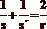
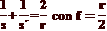
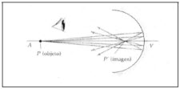
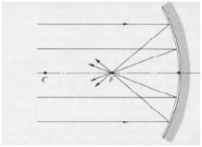
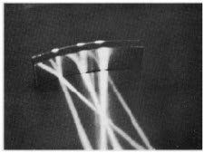
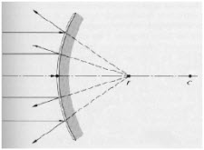
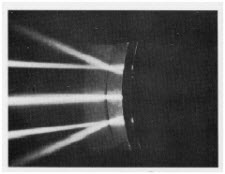
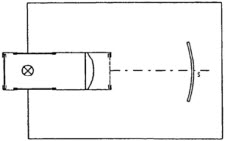
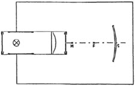

| Objetivo: |
Estudiar cómo se refleja la luz en un espejo cóncavo.
Estudiar la trayectoria de haces de luz característicos, reflejados en un espejo cóncavo.
|
|
| Introducción: |
|
Los espejos curvos se denominan esféricos cuando son una porción de una superficie esférica; son parabólicos cuando pertenecen
a un paraboloide. Pueden ser cóncavos cuando la superficie espejada es la interior o convexos cuando la superficie espejada es la
exterior. En la Figura 1 se muestra un haz de rayos que procede de un punto P situado en el eje de un espejo esférico cóncavo y que
después de reflejarse en el mismo convergen en el punto P’. Los rayos entonces divergen desde este punto como si hubiese un
objeto en el mismo. Esta imagen se denomina imagen real, debido a que la luz realmente emana del punto imagen. Este tipo de
imágenes pueden observarse por un ojo cualquiera, y pueden plasmarse sobre una película fotográfica situada en dicho punto, a
diferencia de las imágenes virtuales que no pueden ser observadas en una pantalla situada en el punto imagen debido a que allí no
hay luz.
(Ver Figura 1)
Cuando observamos la marcha de los rayos hacia un espejo cóncavo, notamos que sólo los rayos que inciden en el espejo en los
puntos próximos al eje del mismo, se reflejan pasando por el punto imagen. Estos rayos de denominan rayos paraxiales. Cuando
otros rayos no paraxiales convergen en puntos próximos al punto imagen, la imagen aparece borrosa en un efecto denominado
aberración esférica. Este efecto se corrige reduciendo el tamaño del espejo de forma de no permitir la incidencia de rayos no
paraxiales. Para los espejos esféricos, teniendo en cuenta las leyes de reflexión y la geometría elemental, puede establecerse una
sencilla relación entre la distancia de la imagen s’, la distancia del objeto s y el radio de curvatura r.

Si definimos el foco del espejo como el punto imagen de un objeto que se encuentra muy alejado (en el infinito), y a la distancia de
este punto la llamamos distancia focal, podemos observar que ésta es igual a la mitad del radio. De aquí resulta.

Justamente, el foco es el punto en donde resultan enfocados todos los rayos paralelos al eje del espejo (Ver Figura 2).
Cuando se analiza un espejo esférico convexo, se observa que los rayos reflejados divergen como si proviniesen de un punto detrás
del espejo; este punto es el foco de este espejo, el cual también se sitúa en la mitad del radio. (Ver Figura 3) |
|
|
| Desarrollo Experimental: |
|
Atención: Cuida que el centro de la curvatura interior del espejo cóncavo esté siempre colocado sobre S, y su posición no varíe al
mover la caja luminosa.
Experimento 1:
Reflexión en el espejo cóncavo
Traza una línea en la hoja de papel (“eje óptico”), y marca sobre ella el punto S (vértice).
Coloca el diafragma de cinco rendijas en la caja luminosa sobre la parte de la lente.
Coloca el espejo cóncavo y la caja luminosa según la Figura 4.
Conecta la caja luminosa a la fuente de alimentación (12V—).
Desplaza la caja luminosa hasta que el haz central de los cinco haces de luz estrechos transcurra exactamente a lo largo del eje óptico (línea a lápiz).
Gira el espejo sobre S y observa las trayectorias de los haces incidentes y reflejados. Anota lo que observas.
Gira el espejo sobre S hasta que el haz central de los cinco haces de luz incidentes se refleje sobre sí mismo en el eje óptico. ¿Qué puedes comprobar? Anótalo.
Marca el punto de intersección de los haces de luz reflejados con el eje óptico; denomínalo F.
Dibuja en el papel el contorno interior del espejo.
Desconecta la fuente de alimentación.
Duplica con el compás el segmento FS, obteniendo otro punto de intersección, M, sobre el eje óptico.
(Ver Figura 5)
Experimento 2:
Trayectoria de los haces característicos después de la reflexión.
Coloca otra vez el espejo, con la parte curvada hacia dentro sobre S.
Coloca el diafragma de una rendija en la caja luminosa sobre la parte de la lente. Enciende la fuente de alimentación (12V-).
Comprueba el ajuste del espejo.
Desplaza la caja luminosa hasta que el haz de luz estrecho transcurra aproximadamente 1 cm. paralelo al eje óptico.
Observa el haz de luz reflejado. ¿Dónde corta al eje óptico? Anota lo que observas en la primera línea de la Tabla 1.
Marca con pares de cruces la trayectoria de los haces de luz incidente y del reflejado.
Haz incidir el haz de luz sobre el espejo, primero a través del punto M (centro óptico) y luego a través del punto F (foco).
Observa en cada caso la trayectoria del haz reflejado; anota lo que observas en la Tabla 1, y marca la trayectoria de los haces.
Desconecta la fuente de alimentación y quita la caja luminosa y el espejo del papel.
Une entre sí las marcas de cada haz de luz, para hacer visible la trayectoria de los tres haces característicos antes y después de la reflexión en el espejo.
|
| Resultados y Conclusiones: |
|
Reflexión en el espejo cóncavo:
1) Trayectoria de los haces de luz incidentes:
2) Trayectoria de los haces de luz reflejados, con el espejo en posición oblicua:
3) Trayectoria de los haces de luz reflejados, con el espejo en posición recta:
Trayectoria de haces característicos después de la reflexión
1) ¿Cómo se reflejan en un espejo cóncavo los haces de luz que inciden paralelos al eje óptico? Formula un enunciado.
2) Mide la distancia f del punto F (llamado “foco”) hasta el vértice S y anota su valor.
3) Traza un arco con centro en M, de radio MS, que corte al eje óptico en S.
Compara este arco con el contorno marcado del espejo cóncavo. ¿Qué conclusiones sacas?
4) ¿Qué relación existe entre la distancia focal del espejo f (segmento FS) y la distancia de M al vértice S?
5) Formula tres enunciados, de acuerdo con tus observaciones (Tabla 1, líneas 1, 2 y 3), que expresen cómo se reflejan en el espejo cóncavo los tres haces de luz característicos.
6) ¿Por qué se refleja sobre sí mismo un rayo de luz que incide en un espejo cóncavo a través del centro óptico M?
|
|
|
| Figura 1: Imagen Formada por un Espejo Cóncavo |
|  |
| |
Figura 2
a) Foco de un Espejo Cóncavo |
|  |
| |
Figura 2
b) Fotografía de Rayos Paralelos Enfocados en un Espejo Cóncavo |
|  |
| |
Figura 3
a) Foco de un Espejo Convexo |
|  |
| |
Figura 3
b) Fotografía de Rayos Paralelos Incidiendo en un Espejo Convexo |
|  |
| |
| Figura 4 |
|  |
| |
| Figura 5 |
|  |
|